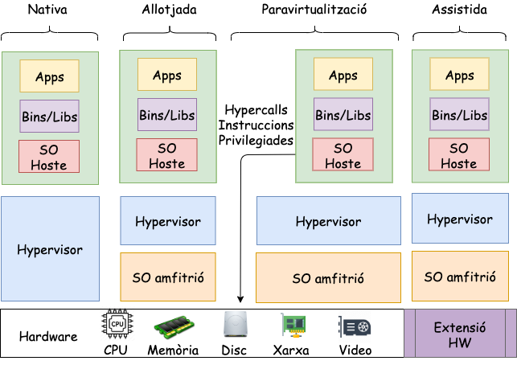

Virtualització i Contenidors
Unitat 5 · Administració i Manteniment de Sistemes i Aplicacions (AMSA)
Què és la virtualització?
La virtualització és una tecnologia que permet executar múltiples sistemes complets (SO, aplicacions i maquinari virtualitzat) sobre un únic host físic.
Per a què serveix?
- Aïllament: cada màquina virtual s’executa de manera independent, sense interferir amb les altres.
- Flexibilitat: permet crear, modificar i eliminar entorns ràpidament.
- Eficiència de recursos: aprofita millor el hardware compartint CPU, memòria i emmagatzematge.
- Facilitat de desplegament i manteniment: simplifica proves, rèpliques, desastres i actualitzacions.
Emulació i virtualització
Emulació
- Reprodueix una arquitectura diferent de la del host (p. ex. executar programari ARM en un host x86).
- Més lenta, perquè s’han de traduir instruccions.
- Útil per a compatibilitat, proves o sistemes antics.
Exemple: QEMU en mode full emulation.
Hypervisor
Un hypervisor és el programari que crea, executa i gestiona màquines virtuals (VMs). Permet compartir el maquinari físic entre diversos sistemes operatius.
Type 1 (bare metal)
- S’executa directament sobre el hardware (no hi ha un SO host).
- Més rendiment, menys latència i millor seguretat.
- Utilitzat en servidors i centres de dades.
- Exemples: VMware ESXi, Microsoft Hyper-V Server, Xen.
Type 2 (hosted)
- S’executa a sobre d’un sistema operatiu host.
- Més senzill d’instal·lar i ideal per a entorns de desenvolupament o escriptori.
- Lleugerament menys eficient.
- Exemples: VirtualBox, VMware Workstation, Parallels.
Arquitectura típiques

Paravirtualització
El sistema operatiu guest es modifica per cooperar amb el VMM:
- CPU paravirtualitzada: ús de hypercalls en lloc d’instruccions privilegiades.
- MMU paravirtualitzada: gestió compartida de les taules de pàgines.
- I/O paravirtualitzada: dispositius virtuals optimitzats (Virtio).
El VMM exposa hypercalls per:
- Activar/desactivar interrupcions
- Canviar taules de pàgines
- Accedir a perifèrics virtualitzats
El VMM pot injectar interrupcions virtuals a través d’esdeveniments.
Intel VT-
- Extensió que transforma x86 en una arquitectura virtualitzable.
- Root mode: s’executa el VMM
- Non-root mode: s’executen els guests
- Cada instància en non-root mode manté un VMCS (Virtual Machine Control Structure) amb:
- Estat del guest (registres, CR3, IDTR, etc.)
- Estat intern invisible
- Transicions:
- VM Entry: càrrega l’estat del guest des del VMCS
- VM Exit: guarda l’estat del guest i restaura el del host
Com guardar/restaurar una VM?
Una màquina virtual es pot guardar, copiar o restaurar perquè està formada per un conjunt d’arxius que descriuen:
- L’estat de la VM (configuració)
- El disc dur virtual
- (Opcional) Snapshots o estats suspesos
Cada hypervisor utilitza formats propis:
- VMware: .vmx (configuració), .vmdk (disc virtual)
- VirtualBox: .vbox (configuració), .vdi (disc virtual)
- KVM/QEMU: .qcow2, .img (disc virtual)
Per exemple, quan vau realitar la pràctica 2, us vaig facilitar una imatge .vmdk de VMware.
Característiques
| Avantatges | Inconvenients |
|---|---|
| Permeten executar arquitectures i SO diferents | Més pesants: cal un SO complet → mida de la imatge elevada |
| Aïllament i seguretat molt alts | Temps d’arrencada més lent que contenidors |
| Es poden compartir i importar imatges fàcilment | Interoperabilitat limitada entre hypervisors (formats diferents) |
Com podem millorar una màquina virtual?
- Imaginem que volem executar un programa senzill, com un petit servidor web.
- Amb una VM, necessitem instal·lar un sistema operatiu complet (Linux, Windows…).
- Això vol dir:
- Molt més espai en disc (GB de la imatge)
- Més memòria RAM per al SO
- Temps d’arrencada força més elevat
Però… és realment necessari un SO complet?
- Un servidor web no necessita totes les funcions del kernel.
- Ens agradaria dir-li al sistema:
- Executa aquest procés, però aïllat de la resta del sistema.
- Un servidor web no necessita:
- funcions d’inici de sessió,
- gestió d’usuaris complexa,
- serveis de fons innecessaris,
- processos del sistema que no tenen res a veure amb l’aplicació
un paquet mínim que inclou biblioteques + configuració + aplicació, executat de manera aïllada però sense un SO complet per cada instància.
Quantes vegades hem sentit això?
Works on my machine
- Al meu PC funciona… però al teu no.
- A l’entorn de tests va perfecte, però en producció peta.
- La versió de la llibreria X és diferent.
- Aquest programa necessita permisos que aquí no té.
- Funciona a la meva màquina virtual… però al servidor no.
- Dependències diferents
- Versions de llibreries inconsistents
- Configuracions de sistema no iguals
- Permisos, usuaris o paths que no coincideixen
- Serveis que al teu entorn estan actius, però en un altre no
Contenidors
La característica que estem buscant rep el nom de contenidors.
Els contenidors no aparareixen com a tals al kernel de Linux. Són una combinació de diverses funcionalitats del nucli:
- Namespaces → Aïllen processos
- cgroups v2 → Limiten i controlen recursos (CPU, memòria, E/S…)
- Overlay filesystems → Proporcionen sistemes d’arxius lleugers i capaços d’apilar capes
La combinació d’aquests tres elements crea l’efecte que nosaltres anomenem contenidors.
cgroups - Control de recursos
Els cgroups són una funcionalitat del kernel que permet limitar i controlar els recursos que utilitza un grup de processos (o un contenidor).
Aquests límits poden ser:
- CPU: quant temps de processador poden consumir
- Memòria: límit de RAM i swap
- Disc (I/O): velocitat de lectura/escriptura
- Xarxa: ample de banda
Per què són importants? Eviten que un procés o contenidor monopolitzi el sistema.
Namespaces - Aïllament
Els namespaces permeten que cada contenidor tingui la seva pròpia visió del sistema, com si fos un entorn independent
- PID → processos propis
- UTS → hostname propi
- NET → interfícies de xarxa i rutes separades
- MNT → sistema de fitxers aïllat
- USER → UIDs/GIDs independents
- IPC → recursos IPC separats
- CGROUP namespaces → cgroups propis
Efecte de màquina virtualitzada, però compartint el mateix nucli real.
Overlay Filesystems
Els contenidors utilitzen OverlayFS (o variants) per gestionar un sistema d’arxius:
- Les capes inferiors són de només lectura (base de la imatge).
- La capa superior és d’escriptura, on viu el que modifica el contenidor.
- Diversos contenidors poden compartir les capes inferiors → estalvi d’espai i eficiència.
Això fa que les imatges siguin:
- Lleugeres
- Ràpides de desplegar
- Facils de distribuir i versionar
Arquitectura simplificada
Aquesta figura mostra com un contenidor és, en realitat, un conjunt de processos normals del sistema Linux:
- El kernel és compartit per tots els processos.
- systemd (o un altre init) gestiona processos de l’amfitrió.
- Els programes normals (A, B, C…) conviuen en el mateix sistema.
- Els processos del contenidor també són processos normals, però:
- Estan aïllats per namespaces,
- Tenen límits de recursos amb cgroups,
- Veuen un sistema de fitxers propi (OverlayFS).

Tot i estar dins del contenidor, segueixen sent processos Linux del host.
Motors o Llibreries de Contenidors
LXC (Linux Containers)
- Sistema de contenidors de baix nivell integrat al kernel.
- Contenidors de sistema complet (semblants a mini-màquines lleugeres).
- Ideal per entorns que necessiten un sistema d’inici complet (init, serveis…).
- És la base tècnica sobre la qual Docker es va inspirar als inicis.
Motors o Llibreries de Contenidors
containerd
- Motor de contenidors de baix nivell.
- Gestiona el cicle de vida dels contenidors (crear, executar, aturar, eliminar).
- Utilitza runc per crear els contenidors reals.
Motors o Llibreries de Contenidors
Docker
- Plataforma molt estesa per crear, distribuir i executar contenidors.
- Enfocada en contenidors d’aplicacions, no de sistema.
- Funcionalitats integrades:
- imatges en capes
- xarxes virtuals
- volums
- API, logs, build…
- Buildkit sistema principal de construcció
Motors o Llibreries de Contenidors
Podman
- Alternativa moderna i compatible amb Docker.
- No necessita daemon: cada contenidor és un procés del propi usuari.
- Permet executar contenidors com usuari normal (rootless).
- Compatible amb:
- imatges Docker
- comandes Docker (alias docker=podman)
- Kubernetes (podman generate kube)
- Permet executar
pods(grups de contenidors) sensekubelet
Passos per executar un contenidor (I)
- Escriure un Containerfile → Descriu com ha de ser el contenidor:
- sistema base
- dependències
- fitxers a copiar
- com s’executa l’aplicació
- Construir la imatge → A partir del Containerfile, el Engine crea una imatge. Pots pensar en la imatge com un .ova o .vmdk de VirtualBox:
- conté el sistema d’arxius
- és immutable (entre cometes)
- es pot copiar o distribuir (portable)
Passos per executar un contenidor (II)
- Executar un contenidor: Amb una imatge, el motor ( Engine / containerd + runc):
- crea un sistema d’arxius aïllat (OverlayFS)
- aplica namespaces i cgroups
- arrenca el procés principal del contenidor
Els passos 1 i 2 només es fan un cop per crear la imatge. Per executar el contenidor, només cal el pas 3.
Què és una imatge de contenidor?
Un contenidor s’executa a partir d’una imatge OCI (Open Container Initiative). Una imatge conté:
- Root filesystem: El sistema d’arxius que el contenidor veu com a arrel (/):
- binaris
- llibreries
- fitxers de configuració
- Metadades que indiquen com s’ha d’executar el contenidor:
- variables d’entorn
- comanda o entrypoint
- ports exposats
- usuaris
- configuració de xarxa
- punts de muntatge (volums)
manifest.json
És el mapa general de la imatge.
Conté:
- identificador de les capes (layers)
- el fitxer de configuració a utilitzar
- el tipus de sistema d’arxius
- checksums (sha256) per assegurar integritat
Pensa en el manifest com l’índex de tot el que forma la imatge.
config.json
Defineix el comportament del contenidor quan s’executi.
Conté:
- Entrypoint i Cmd
- Variables d’entorn
- Usuari d’execució
- Volums
- Directori de treball (WORKDIR)
- Autor, timestamps, historial de construcció
- Informació d’arquitectura (amd64, arm64…)
El config és la recepta que diu com s’ha d’executar la imatge.
Capes d’una imatge de contenidor
- El filesystem d’una imatge està format per diverses capes apilades (OverlayFS).
- Cada capa representa un conjunt de canvis respecte la capa anterior (instal·lar paquets, afegir fitxers…).
- Les capes són de només lectura i es poden reutilitzar entre imatges diferents → estalvi d’espai i eficiència.
Les capes són com commits: cada una és un increment sobre l’anterior.
Característiques dels contenidors
Avantatges
Alt rendiment: Els contenidors s’executen gairebé a velocitat nativa perquè són processos d’usuari que comparteixen el kernel del host.
Desplegament molt ràpid: Arranquen instantàniament, ja que no cal inicialitzar un sistema operatiu complet.
Interoperabilitat d’execució: Poden funcionar amb diferents engines i runtimes (Docker, containerd, CRI-O, Podman, runc…).
Desavantatges
- Només per a Linux
- Depenen de funcionalitats del kernel de Linux (namespaces, cgroups, OverlayFS).
- Per això les imatges sempre són Linux encara que executis Docker a Windows/Mac.
- Aïllament reduït
- Comparteixen el kernel del host → menor seguretat que la virtualització completa (VMs), on cada màquina té el seu kernel.
Immutable però modificable
- Les imatges de contenidors són immutables: La imatge original no canvia mai.
- Però quan un contenidor s’executa, sí que es pot modificar.
- Com és possible?
Perquè NO és una còpia bit a bit
- Els contenidors utilitzen un filesystem en capes (OverlayFS):
- Les capes inferiors (base image) són només lectura.
- El contenidor té una capa superior (writable layer) on fa els canvis.
- Totes les modificacions (fitxers nous, modificats o eliminats) van només a la capa superior.
- El commit d’un contenidor crea una nova imatge amb els canvis de la capa superior.
La imatge no canvia. El contenidor sí.
Portable si … però no totalment
- Les imatges de contenidors són portables: es poden copiar i executar en qualsevol sistema amb el mateix motor (Docker, Podman, containerd…).
- Però hi ha algunes limitacions:
- Arquitectura: una imatge x86 no funcionarà en un host ARM. (Tot i que existeix multi-arch amb manifest i buildx.)
- Dependències del kernel: els contenidors depenen de funcionalitats específiques del kernel (namespaces, cgroups, OverlayFS). Si el host no les suporta, el contenidor no funcionarà.
- Recursos del host: si el host no té suficients recursos (CPU, memòria, disc), el contenidor pot no funcionar correctament
- Els contenidors no encapsulen el kernel ABI, per tant, si una aplicació depèn d’una versió específica del kernel, pot no funcionar en un host amb un kernel diferent.
VMs vs Contenidors
Quan utilitzar màquines virtuals (VMs)
- Control complet del sistema operatiu (kernel propi, drivers, init, serveis…)
- Aïllament molt fort: Ideal per seguretat estricta o entorns multi-tenant desconfiats.
- Compatibilitat d’arquitectura
- Necessitat d’emular o executar altres arquitectures i sistemes.
Quan utilitzar contenidors
- Desplegament molt ràpid: S’aixequen gairebé instantàniament.
- Consum reduït de recursos: Comparteixen el kernel → menys RAM i CPU.
- Ideals per aplicacions i serveis.
Arquitectura Docker

Components principals Docker
- Docker client: interfície d’usuari (CLI, GUI, API)
- Docker Engine: motor de contenidors
- containerd: Gestiona el cicle de vida dels contenidors (crear, aturar, eliminar).
- runc: Crea el contenidor real utilitzant namespaces i cgroups. (És l’única part que parla directament amb el kernel.)
- libnetwork: Gestió de xarxes virtuals (bridges, NAT, interfaces virtuals).
- graphdriver: Gestió d’imatges i del sistema de capes (OverlayFS, btrfs, zfs…). Recentment anomenat snapshotter.
- plugins: Extensions per storage, logging i networking.
- Kernel de Linux: El kernel és on realment s’executa el contenidor.
- Network stack, system calls, VFS…
- Namespaces, cgroups v2, OverlayFS
Docker és només una capa d’orquestració. Els contenidors els crea el kernel.
Instal·lació de Docker a EC2 (I)
- Instal·lar el paquet amb
dnfa Amazon Linux 2:
- Iniciar el servei de Docker:
- Comprovar la instal·lació:
Instal·lació de Docker a EC2 (II)
- Per a poder executar comandes de Docker sense necessitat de ser un usuari root, afegirem el nostre usuari al grup docker:
- Actualitzarem els permissos del socket de Docker per permetre als usuaris del grup docker llegir i escriure el fitxer:
/var/run/docker.sock
Experiment 1: Temps d’arrencada
En aquest experiment compararem la velocitat d’arrencada d’una màquina virtual (VM) amb la d’un contenidor Docker.
- Màquina Virtual (VM):
- Utilitzeu VirtualBox per crear una màquina virtual amb Debian.
- Mesureu el temps d’arrencada des de l’inici fins que el sistema està llest per a l’ús.
systemd-analyzeés una eina útil per això.
- Contenidor Docker:
- Creeu un contenidor Docker utilitzant la imatge oficial de Debian.
- Mesureu el temps d’arrencada del contenidor des de la comanda
docker runfins que el procés principal està en execució. Podeu utilitzar la comandatimeper mesurar-ho.
- Per exemple:
time docker run --rm debian sleep 1
Exemple 1 (I)
Imagineu un servidor amb molts recursos

Exemple 1 (II)
Despleguem primer una aplicació amb JAVA

Exemple 1 (III)
Despleguem després una amb Python

Exemple 1 (IV)
Una web amb react

Exemple 1 (V)
això no escalarà gairebé bé
- Cal definir usuaris i permisos per a cada aplicació.
- Cal evitar conflictes de versions de llibreries.
- I si Java necessita OpenSSL 1.1.x i Python OpenSSL 3.x?
- Cal evitar que una aplicació pugui accedir a fitxers d’una altra aplicació.
- Necessitem aïllament:
- Una màquina virtual per aplicació seria massa costosa en recursos.
- Necessitem un contenidor per aplicació!
Exemple 1 (VI)
- Contruïm un contenidor per a cada aplicació:
- Un contenidor amb Java + app Java
- Un contenidor amb Python + app Python
- Un contenidor amb Node.js + app React
- Cada contenidor té el seu propi sistema d’arxius, llibreries i configuració.
- Compartim el mateix kernel del host, però cada aplicació està aïllada.
Exemple 1 (VII)
I ara sí que escala bé!

Imatge ubuntu
- La imatge d’
ubuntués una imatge oficial lleugera de Ubuntu. - Conté una sola capa.
- Podeu utiltizar
docker inspect <image_name>per veure els detalls com les capes, el sistema d’arxius i la configuració.
Mida de les imatges
Si utiltizeu la comanda docker pull ubuntu && docker image ls ubuntu, veureu que la imatge ocupa només 139 MB.
Aquest imatge únicament conté el userspace filesystem i els paquets bàsics de Ubuntu. No conté:
- Kernel
- Drivers
- Serveis de
systemd - Entorn gràfic
- bootloader
Un contenidor no és una VM, és un procés aïllat que comparteix el kernel del host.
Dockerfile bàsic
- Crear un fitxer anomenat
Dockerfile. - Afegeix al fitxer, la imatge per on vols començar:
- Per construir la imatge, utilitza la comanda:
- Aquesta imatge amsa té una sola capa, basada en
ubuntu.
Dockerfile amb més instruccions
RUNexecuta comandes a la imatge base.CMDdefineix la comanda per defecte quan s’executa el contenidor.La imatge resultatn tindrà 2 capes:
- Capa base:
ubuntu - Capa RUN: amb
figletinstal·lat i les dependències actualitzades.
- Capa base:
Ouch! Com és que estic instal·lant sense sudo?
Executant la imatge
- Reconstruïm la imatge:
docker build . -t amsa - Executem el contenidor:
docker run amsa
- Veurem que s’executa la comanda
figlet "amsa"i es mostra el text ASCII.
Execució interactiva
Per executar el contenidor de manera interactiva, utilitzeu: docker run -it amsa bash.
- Aquesta comanda dona al contenidor una terminal interactiva mantenint STDIN obert (-i) i assignant una terminal TTY (-t).
docker run -it ubuntu us permetrà explorar el sistema de fitxers d’Ubuntu dins del contenidor amb una shell bash, mentre que docker run ubuntu només executa la comanda per defecte i surt.
Compartint fitxers
Anem a modificar figlet per mostrar un missatge personalitzat, a partir d’un fitxer local message.txt.
- COPY
copia fitxers/directoris del host al sistema de fitxers del contenidor.
Cada cop que modifiqueu el fitxer message.txt, haureu de reconstruir la imatge per veure els canvis.
Pregunta 1
Quina és la diferència entre aquests dos Dockerfiles?
A
Les capes es construeixen en ordre. Si el fitxer message.txt canvia, només la capa que el copia (COPY) es tornarà a construir en el Dockerfile A. En el Dockerfile B, si message.txt canvia, tota la capa RUN (instal·lació de figlet) també es tornarà a construir, fent el procés més lent.
Treballant amb python
Imagine que teniu un projecte amb python amb els fitxers següents:
├── main.py
├── message.txt # The message we want pfiglet to print
├── requirements.txt # pyfiglet declared as a dependency
└── .venv # The python virtual envon el main.py conté:
Dockerfile per a l’aplicació Python
- Normalment, per executar-ho sense contenidors, faríem:
- Però amb Docker, podem crear un Dockerfile així:
Com és que no estem utilitzant un entorn virtual .venv dins del contenidor?
COPY . .
- En lloc de copiar fitxer per fitxer, podem copiar tot el directori de treball amb:
Optimitzant la imatge
- Quan es treballa amb contenidors, és important mantenir les imatge tant petites com sigui possible.
- El contenidor únicament necessita (
message.txt,main.py,requirements.txt). - Com estem fent
COPY . ., també estem copiant el directori.venv, que pot ser molt gran i innecessari dins del contenidor.
Dockerignore
- Per evitar copiar fitxers/directoris innecessaris, podem utilitzar un fitxer
.dockerignore. - Sembla un
.gitignore, però per a Docker.
- Això evitarà que el directori
.venv, elDockerfilei el propi.dockerignorees copiïn a la imatge.
Optimització final del Dockerfile
- Què més es pot optimitzar?
- Què passa si únicament modifico el fitxer
message.txt?
Caché de capes
- Els projectes reals tenen moltes dependències, i haver de reinstal·lar-les cada cop que un fitxer canvia seria molt lent.
- És bona pràctica primer copiar només els fitxers necessaris per instal·lar les dependències, i després copiar la resta del projecte:
Dockerfile ubuntu
Si mireu el contingut de la imatge oficial d’ubuntu, veureu que el Dockerfile és així:
FROM scratchindica que aquesta imatge no té cap capa base (és buida).ADD rootfs-22.04-amd64.tar /semblant aCOPY, però amb més funcionalitats, per exemple, pot descomprimir arxius.CMD ["/bin/bash"]estableix la comanda per defecte quan s’executa el contenidor.
Quina diferència hi ha entre CMD["/bin/bash"] i CMD /bin/bash? És el mateix?
Exercici 1: Contenidor amb dependències
Imagineu que executeu la comanda següent:
Explica què passa?
Exercici 1: Contenidor amb dependències (solució)
La imatge oficial de python:3.9 no inclou la llibreria NumPy per defecte. Per tant, quan s’intenta executar el codi Python que importa NumPy, es produeix un error perquè la llibreria no està instal·lada dins del contenidor.
Exercici 2: Compartint dades
Imagina que tens un script de Python anomenat hola.py al teu sistema host amb el següent contingut:
Vols executar aquest script dins d’un contenidor Docker basat en la imatge oficial de Python 3.9. Com ho faries?
Exercici 2: Compartint dades (solució 1)
Creariam un dockerfile per a la nostra aplicació Python:
Exercici 3: Compartint dades de sortida
Però, i si volem que el script hola.py escrigui un fitxer de sortida anomenat sortida.txt dins del sistema host? Com ho faríem?
Compartint dades amb un contenidor Docker
Per compartir dades estàtiques estem utiltizant la instrucció COPY al Dockerfile. Però, i si volem compartir dades dinàmiques entre el sistema host i el contenidor, com els fitxers de sortida generats pel contenidor?
Cal compartir un directori o fitxer entre el sistema host i el contenidor. Per això, utilitzarem l’opció -v de la comanda docker run.
Quins són els directoris del contenidor?
- Podem utilitzar la comanda
docker run -it <imatge> bashper accedir a la consola del contenidor i explorar el sistema de fitxers. - Un cop dins, podem utilitzar comandes com
ls,pwdicdper navegar pels directoris. - Alguns directoris comuns són:
/app: sovint utilitzat com a directori de treball per a aplicacions./data: sovint utilitzat per emmagatzemar dades persistents./tmp: directori temporal.
WORKDIR
- La instrucció
WORKDIRal Dockerfile estableix el directori de treball per a qualsevol comanda següent (RUN,CMD,ENTRYPOINT,COPY,ADD). - Si el directori no existeix, Docker el crearà automàticament.
- Per exemple:
Exericici 3: Compartint dades de sortida (solució)
Primer, crearem un script hola2.py que escriu un fitxer de sortida:
Després, executarem el contenidor Docker amb l’opció -v per compartir el directori actual del sistema host amb el directori /app del contenidor:
Taula de comandes útils de Docker
| Comanda | Descripció |
|---|---|
docker build -t <nom> . |
Construir una imatge des del Dockerfile actual. |
docker run <imatge> |
Executar un contenidor des d’una imatge. |
docker run -it <imatge> bash |
Executar un contenidor en mode interactiu amb una shell. |
docker ps |
Llistar els contenidors en execució. |
docker stop <contenidor> |
Aturar un contenidor en execució. |
docker rm <contenidor> |
Eliminar un contenidor aturat. |
docker rmi <imatge> |
Eliminar una imatge. |
docker images |
Llistar les imatges disponibles. |
docker logs <contenidor> |
Veure els logs d’un contenidor. |
docker inspect <imatge/contenidor> |
Veure els detalls d’una imatge o contenidor. |
Xarxes i Contenidors
Imagineu que tenim un servidor web molt simple:
Si executem aquesta comanda exposarem els fitxers a una interfície de xarxa del host.

Contenidor amb servidor web
- Creem un Dockerfile per al servidor web:
- Construïm la imatge i executem el contenidor:
Si accedim a http://localhost:8080 des del host, no veurem res!
Per què no funciona?
- Els contenidors per defecte estan aïllats.
- A part del seu sistema de fitxers propri, també tenen la seva pròpia pila de xarxa.
- El port 8080 del contenidor no és el port 8080 de la màquina host.
Mapeig de ports
- Per accedir als serveis d’un contenidor des del host, cal fer un mapeig de ports.
- Utilitzem l’opció
-pdedocker runper mapar un port del host a un port del contenidor:
- La sintaxi és
-p <port_host>:<port_contenidor>, on ara podem accedir al servidor web ahttp://localhost:8085.
Exercicis
Unitat 5 · Administració i Manteniment de Sistemes i Aplicacions (AMSA) 🏠